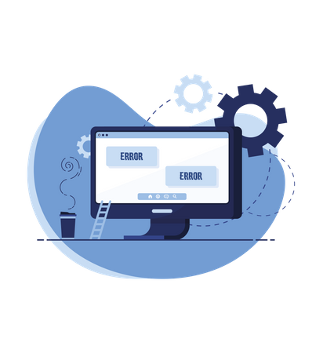

Welkom bij mijn portfolio
Dit is mijn portfolio voor de minor HIIS. Op deze website vind je mijn reflecties, ontwerpen en projecten die ik tijdens dit semester heb gemaakt.
Bekijk mijn werk

Dit is mijn portfolio voor de minor HIIS. Op deze website vind je mijn reflecties, ontwerpen en projecten die ik tijdens dit semester heb gemaakt.
Bekijk mijn werk